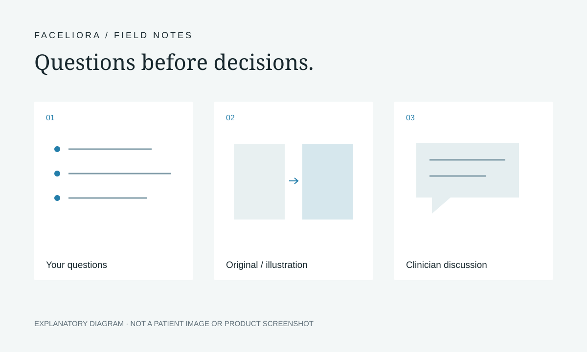

Using Facial Visualization in a Consultation: Questions to Discuss
A facial visualization can make a preference easier to describe. It can also leave important questions unanswered. Use an illustration as a way to organise a conversation: what you hope to understand, what the image represents and what requires a clinician’s assessment. The following prompts are general education, not a diagnosis, a treatment recommendation or a prediction of your result.

Begin with your own question
Describe the concern or curiosity in your own words before choosing a change in an image. You might want to understand a feature from another angle, explore how to explain a preference or find out whether there are options worth discussing. You do not need to arrive with a procedure already selected.
Write down what you would like to understand and what you would prefer to leave unchanged. If an illustration attracts your attention, ask which specific detail matters to you. Keeping the question separate from the image makes room for a different explanation or an alternative that you had not considered.

Identify the product and the type of visualization
Ask which product produced the view. Faceliora Web uses front (0°) and side (90°) 2D views for facial analysis and procedure simulation. Faceliora Clinic imports an external 3D facial model into clinic software for viewing and adjustment. These are different visual formats and workflows.
Ask what information was used to create the view and what was changed afterwards. A polished screen is not an explanation of its input or limitations. If you do not understand how the view was prepared, make that your first question before discussing what it appears to suggest.
Separate the original, the illustration and the explanation
Keep three labels in your notes: original input, adjusted illustration and clinician’s explanation. An original image or model records the input used. An illustration shows a visual adjustment. The clinician’s explanation addresses the questions raised in an individual consultation.
Ask to see which view is original and which has been adjusted. Note anything that remains uncertain about angle, missing information or the way the comparison is presented. Avoid reading an illustration as proof that a treatment has been performed or that a particular outcome is assured.
Ask a qualified clinician about suitability and alternatives
The NHS recommends researching a cosmetic procedure and discussing expectations with a qualified practitioner. The questions below are a starting point for that discussion, not answers about your suitability.
Explain your goal and ask what assessment is needed. Ask whether any procedure is appropriate, what alternatives could be considered and whether choosing no procedure is an option. Give the clinician the relevant information they request rather than relying on a visualization to convey your health history.
- What can you assess from this view, and what needs a separate examination or discussion?
- Which of my expectations are uncertain or may need to change?
- What alternatives should I understand before deciding?
Discuss the parts that an image cannot answer
Use the consultation to ask about the proposed procedure, possible risks and complications, recovery, aftercare and costs. Ask what might vary between people and why an actual result might differ from a simulation. These are questions for the clinician and provider, not conclusions that this guide can supply.
Request an explanation in terms you understand. If a word, image or comparison is unclear, write it down and ask again. Ask whom you would contact after a procedure and which follow-up arrangements would apply. Do not treat a software demonstration as a substitute for these discussions.
Use a neutral consultation worksheet
You can copy these headings into your own notes. Keep answers separate from questions, and mark anything still awaiting clarification. The worksheet is a conversation aid; it is not a consent form or a medical record.
- My goal or question, in my own words.
- The product and visual format used: two 2D views (front and side) or an external 3D model.
- Which view is original and which is an adjusted illustration.
- Questions about suitability, alternatives and choosing no procedure.
- Questions about risks, recovery, aftercare, costs and possible variation.
- What the clinician explained, what remains unanswered and what I want time to consider.
Keep time for reflection
NHS guidance encourages taking time to decide and stepping away if you are uncomfortable. Its advice is a general reference from the UK, not a statement of Thai legal requirements or a fixed waiting period that applies to you.
Revisit your notes when you are ready. You can ask further questions or decide not to proceed. For product questions, the Faceliora team can explain the software’s scope; treatment questions belong with a qualified clinician.